Contour measurements describe each stroke on its own. The medial-axis
measurements describe the space between strokes: whether two
contours run parallel, how far apart they are, whether they mirror each
other, and whether the gap between them narrows at a constant rate.
mlvtoolbox computes four such branch scores
(parallelism, separation, mirror and taper) from the medial axis of a
rasterized drawing, following Walther et al. (2023) and Rezanejad et
al. (2019), and maps them back onto the contour pixels.
The computation has five stages, each stored in the
mlv_mat object that compute_mat() returns:
- rasterize the drawing into ink pixels;
- compute a signed distance map to the ink;
- compute the average outward flux (AOF, “flux”) of that distance map;
- threshold the flux and thin the result to a one-pixel skeleton;
- trace the skeleton into ordered branches, each point carrying a radius.
compute_mat_properties() then scores every branch point,
and map_mat_properties() transfers the scores to the
contours. This vignette follows one small drawing through every stage
with plot() on the mlv_mat, then explains each
score with a pair of drawings that differ in only that respect. All
values come from the package defaults;
vignette("mlv-compatibility", package = "mlvtoolbox") shows
how to reproduce values published with the MATLAB toolbox.
The running example
The drawing has three contours on an 80 by 50 pixel canvas: a straight line at y = 18, a second line below it that runs from y = 32 to y = 30, so the gap narrows slightly from left to right, and a shallow open V beneath both.
seg <- function(...) matrix(c(...), nrow = 1)
drawing <- mlv_drawing(list(
seg(10, 18, 70, 18),
seg(10, 32, 70, 30),
rbind(c(20, 40, 40, 44), c(40, 44, 60, 40))), width = 80, height = 50)
mat <- compute_mat(drawing)
mat
#> <mlv_mat> 50 x 80 , 141 skeleton pixels, 3 branchescompute_mat() accepts a drawing or a logical ink matrix.
Given a drawing, it first calls rasterize() with a line
width of one pixel.
plot(mat, "ink", drawing = drawing, overlay_col = okabe[["vermillion"]],
overlay_lwd = 1.5, legend = FALSE)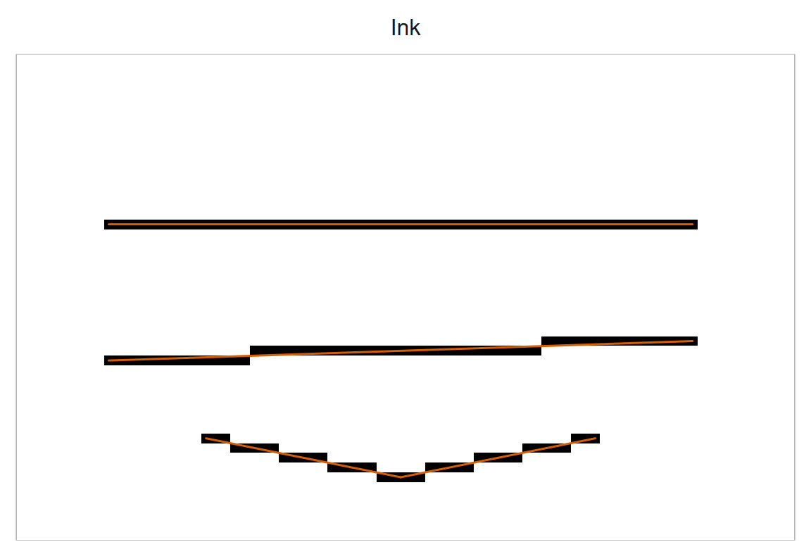
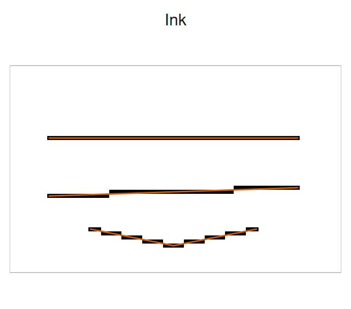
Stage 1. The rasterized ink (black), with the vector contours drawn over it in orange: each segment becomes one pixel per step along its longer axis.
Signed distance map
The distance map gives, for every pixel, the Euclidean distance in
pixels to the nearest ink pixel. compute_mat() first thins
the ink to strokes one pixel wide, so a thick stroke is measured from
its centre line. Ink pixels then have distance 0, except an isolated
single ink pixel, which has −1; that negative value is why the map is
called signed. Only ink counts as boundary: the canvas edge is not a
contour, so the distance keeps growing towards the corners.
plot(mat, "distance", drawing = drawing)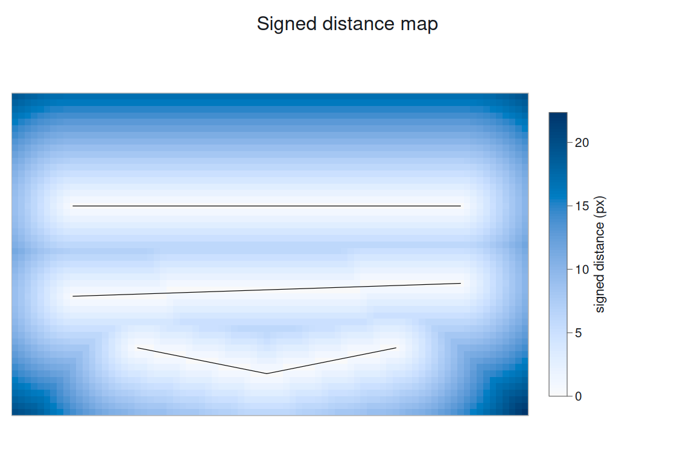
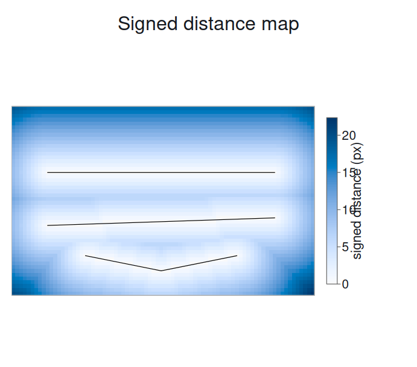
Stage 2. Signed distance to the nearest ink pixel. The ridges of locally maximal distance, halfway between neighbouring contours, are the medial axis the later stages extract.
Average outward flux
Away from the ink the distance map rises at the same rate in every
direction; a ridge is where the slopes rising from two different
contours meet. The flux detects that meeting. Around each pixel the
method places a circle of radius epsilon (1 pixel) and
takes samples (60) evenly spaced points on it. At each
point it forms the unit vector towards that point’s nearest ink pixel
(averaged over equally near ink pixels) and takes the dot product with
the circle’s outward normal. The stored value is the sum of the 60 dot
products.
On the medial axis, the points on either side of the circle have their nearest ink on their own side, so their vectors point outwards and the sum is large and positive. On and next to ink, the vectors point back across the circle and the sum is negative. For a point midway between two parallel straight boundaries, the continuous average is 2/π per sample, which is 38.2 for 60 samples; on the pixel grid the sum is somewhat lower.
plot(mat, "flux", drawing = drawing)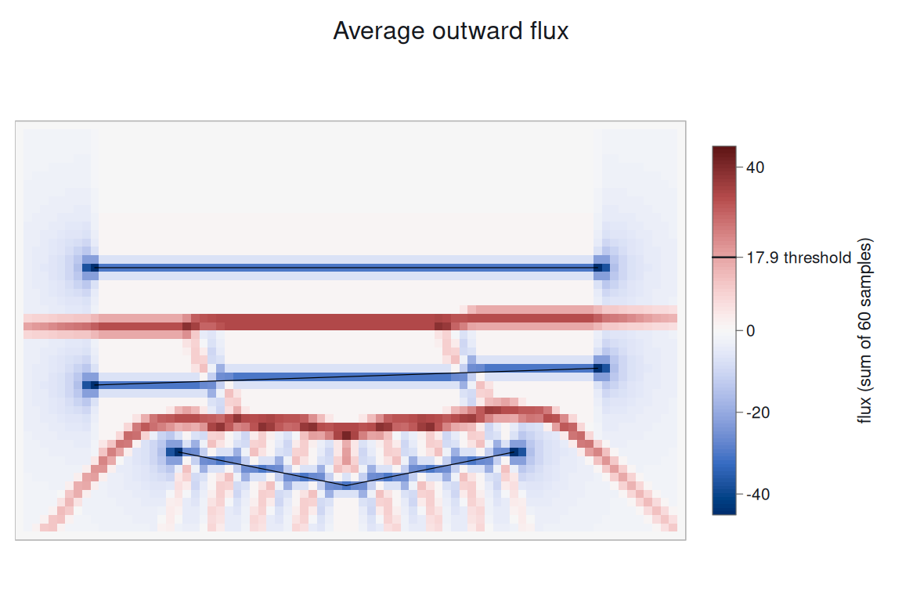
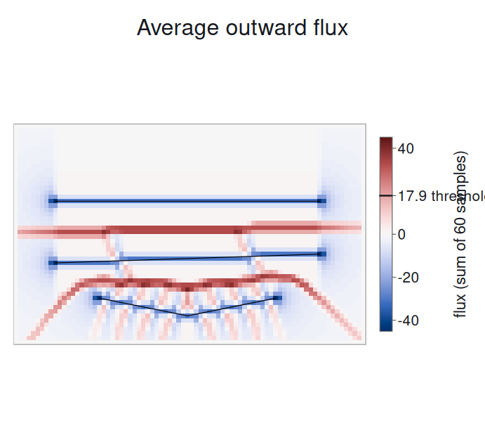
Stage 3. Average outward flux on a diverging scale with limits symmetric about zero. Red ridges (positive flux) run midway between contours; blue (negative) hugs the ink. The black tick on the colour bar marks the skeleton threshold.
Pixels whose sampling circle would leave the canvas are set to zero, which is why a one-pixel frame shows no flux.
Threshold and skeleton
A pixel belongs to the medial axis if its flux exceeds
samples * threshold, where
threshold = (2/π) sin(threshold_angle). The object
angle threshold_angle (default 28°) is the angle
between the axis and the direction to the nearest boundary: for two
parallel boundaries it is 90°, and at the open end of a structure, where
the two sides diverge, it shrinks towards zero. The default threshold is
0.2989, so a pixel needs a flux above 17.93.
The thresholded region is often two or three pixels wide.
skeletonize() thins it to a one-pixel skeleton with the
same 8-connected topology; the default
morphology = "minimal" leaves no pixel that could be
removed without changing that topology. Components smaller than
min_component pixels (default 2.5% of the larger image
side) are dropped.
plot(mat, "skeleton", drawing = drawing)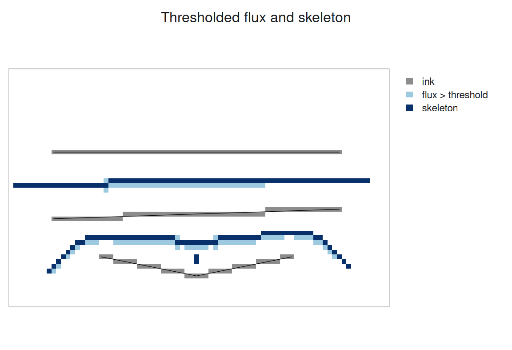
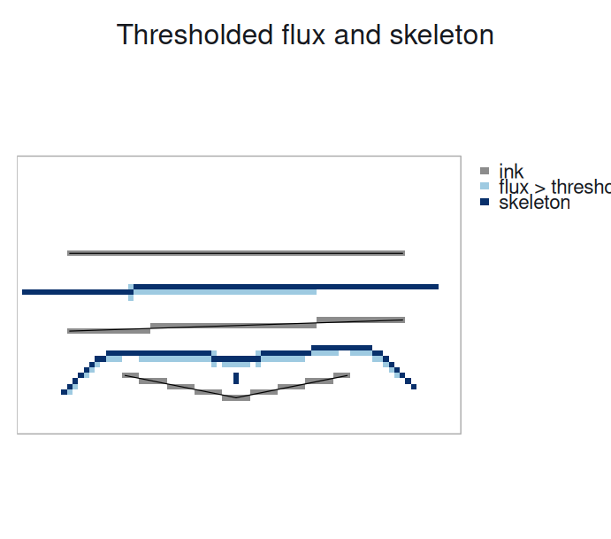
Stage 4. Pixels whose flux exceeds the threshold (light blue) and the thinned skeleton (dark blue). The skeleton runs midway between each pair of contours and continues past their open ends, where the two nearest boundaries are the contour endpoints.
Branches
trace_skeleton(), called by compute_mat(),
splits the skeleton into branches: paths between end pixels and
junction pixels. Each branch is a data frame with one row per skeleton
pixel, in path order, holding its position and its radius, the
distance map at that pixel. The radius is the radius of the largest disc
centred on the axis that touches ink. A junction pixel belongs to every
branch that meets there, but appears only once within a branch.
n_points <- vapply(mat$branches, nrow, integer(1))
n_points
#> [1] 75 64 2
head(mat$branches[[1]])
#> row column x y radius AOF
#> 1 25 2 2 25 10.630146 18.20384
#> 2 25 3 3 25 9.899495 19.53594
#> 3 25 4 4 25 9.219544 20.96305
#> 4 25 5 5 25 8.602325 22.45136
#> 5 25 6 6 25 8.062258 23.93802
#> 6 25 7 7 25 7.615773 25.32397
plot(mat, "branches", drawing = drawing)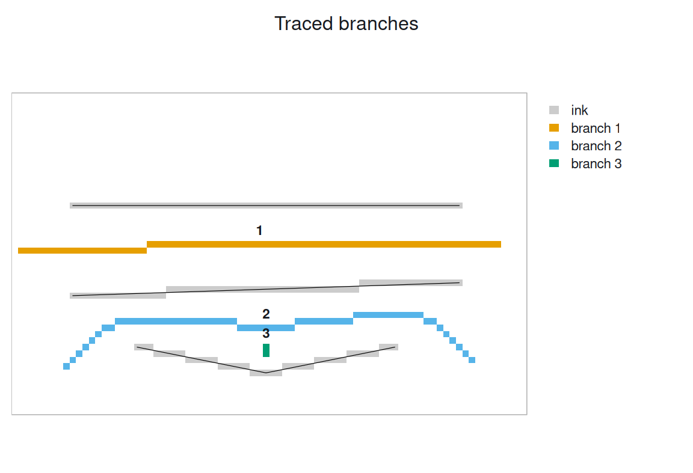
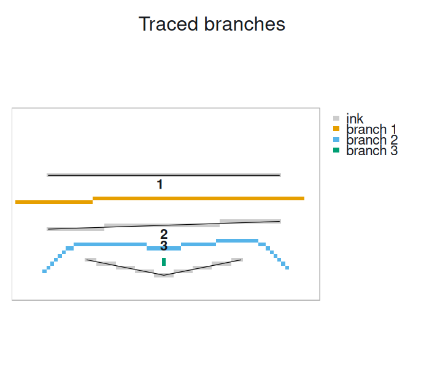
Stage 5. The traced branches, one colour per branch and labelled with their index in mat$branches. The two-pixel piece of skeleton inside the V is a separate component; a component is never removed, however short, so it is branch 3.
Small irregularities in a contour give the skeleton short side
branches. A spur is a path from an end pixel to a junction, and
spurs with fewer than min_branch_points pixels (default 10,
junction included) are removed. The shortest spurs go first; after each
removal, two paths that meet at a pixel where nothing else branches are
joined into one branch, so a junction that has lost its spur no longer
splits the axis. Two rules keep the result independent of tracing order
and keep small shapes measurable. Spurs of equal length are treated
alike: if removing all of a junction’s shortest spurs would leave it
with fewer than two paths, all of them are kept. And only spurs are
removed, so no skeleton component loses its last path. The four equal
arms of a small square’s X-shaped skeleton are therefore all kept, while
a spur on a long axis is removed.
stub <- mlv_drawing(list(seg(10, 10, 70, 10), seg(10, 30, 70, 30),
seg(40, 10, 40, 15)), width = 80, height = 40)
op <- par(mfrow = c(1, 2))
plot(compute_mat(stub, min_branch_points = 2), "branches", drawing = stub,
main = "min_branch_points = 2")
plot(compute_mat(stub), "branches", drawing = stub,
main = "min_branch_points = 10")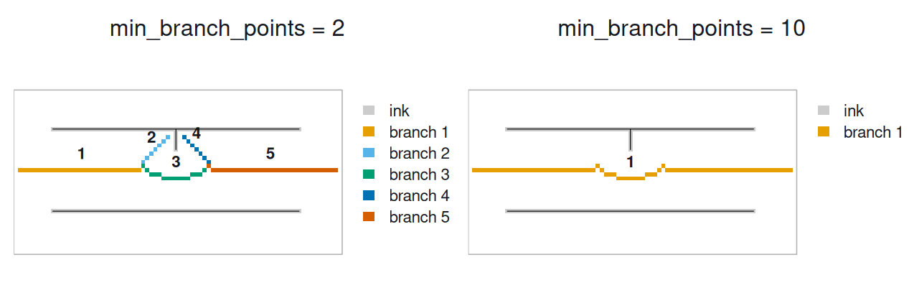
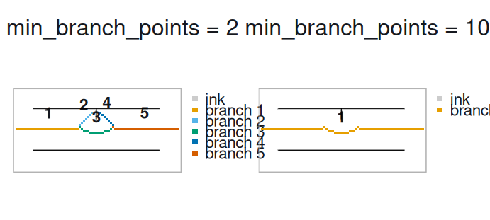
A short stub on the upper of two lines gives the skeleton two 8-pixel spurs. With min_branch_points = 2 (left) the skeleton is traced as five branches; with the default 10 (right) both spurs are removed and the axis between the lines is a single branch.
par(op)Branch scores
compute_mat_properties() scores every point of every
branch. Parallelism, separation and mirror are computed by default;
taper must be requested.
mat <- compute_mat_properties(
mat, properties = c("parallelism", "separation", "mirror", "taper"))
round(sapply(c("parallelism", "separation", "mirror", "taper"),
function(p) sapply(mat$branches, function(b) median(b[[p]]))), 3)
#> parallelism separation mirror taper
#> [1,] 0.983 0.162 0.874 0.994
#> [2,] 0.750 0.107 0.815 0.969
#> [3,] NA 0.034 NA NAThe table gives the median over each branch’s points. All four scores
lie between 0 and 1, and all four end in the same two steps: a moving
mean over three neighbouring points, then a power of 10
(power), which spreads the values near 1. Under the default
branch_rule = "invariant", each score is the mean of the
scores computed in the two traversal directions, so it does not depend
on which end the tracer started from.
Some points have no score. Parallelism and taper compare a point’s
neighbours on both sides, so the two end points of a branch, and every
point of a branch with fewer than three points, are undefined; mirror
needs more than three points; separation is undefined below radius 1.
The default marks these points NA, and the moving mean averages only the
defined values around each point, so a branch end takes the value of its
defined neighbour (that point’s value before smoothing) instead of being
pulled towards zero. A value of exactly 0 is defined and is averaged
like any other. The two-pixel branch 3 has no interior point, so its
parallelism, mirror and taper are NA (the median above is NA); its
separation is defined. The published estimator
(branch_rule = "mlv2023") scores undefined points 0 and
averages those zeros into their neighbours.
op <- par(mfrow = c(1, 2), mar = c(0.5, 0.5, 2, 0.5))
plot(mat, "parallelism", drawing = drawing)
plot(mat, "separation", drawing = drawing)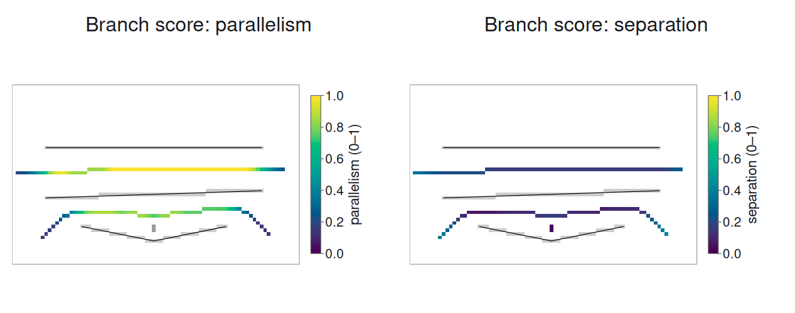
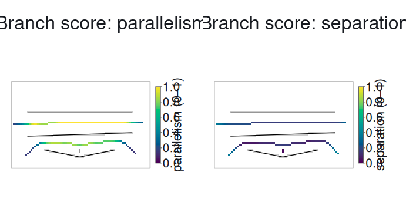
Branch scores at each skeleton pixel. Parallelism (left) is near 1 along the middle of the upper channel and falls where the skeleton bends out of an open end; separation (right) is higher along the upper channel, where the gap is wider.
par(op)Each score is easiest to understand on two drawings that differ in only the property it measures. The helper below computes the scores and returns the branch with the most points, sorted from left to right.
poly <- function(x, y) cbind(head(x, -1), head(y, -1), x[-1], y[-1])
P <- c("parallelism", "separation", "mirror", "taper")
score_pair <- function(d) compute_mat_properties(compute_mat(d), properties = P)
main_branch <- function(m) {
b <- m$branches[[which.max(vapply(m$branches, nrow, integer(1)))]]
b[order(b$x), ]
}
interior <- function(b) b$x >= 25 & b$x <= 65 # away from the open endsParallelism
Parallelism asks whether the radius stays constant along the axis. At
each point i, over a window of window (5)
points on either side, it divides the length of the axis by the length
of the curve traced by the axis together with the radius:
parallelism(i) = Σ |Δaxis| / Σ √(|Δaxis|² + ΔR²).
A constant radius gives exactly 1. Two straight lines that converge at half-angle θ about a horizontal axis have a radius that changes by sin θ per pixel of axis, so before the final smoothing every point scores 1/√(1 + sin²θ), and after the power of 10, (1 + sin²θ)^−5.
parallel <- mlv_drawing(list(poly(c(10, 80), c(15, 15)),
poly(c(10, 80), c(35, 35))), 90, 50)
converging <- mlv_drawing(list(poly(c(10, 80), c(8, 22)),
poly(c(10, 80), c(42, 28))), 90, 50)
m_par <- score_pair(parallel); m_con <- score_pair(converging)
b_par <- main_branch(m_par); b_con <- main_branch(m_con)
theta <- atan(14 / 70) # each line rises 14 px over 70 px
c(parallel = median(b_par$parallelism[interior(b_par)]),
converging = median(b_con$parallelism[interior(b_con)]),
converging_analytical = (1 + sin(theta)^2)^-5)
#> parallel converging converging_analytical
#> 1.0000000 0.8017359 0.8280335
op <- par(mfrow = c(1, 2), mar = c(0.5, 0.5, 2, 0.5))
plot(m_par, "parallelism", drawing = parallel, main = "Parallel")
plot(m_con, "parallelism", drawing = converging, main = "Converging")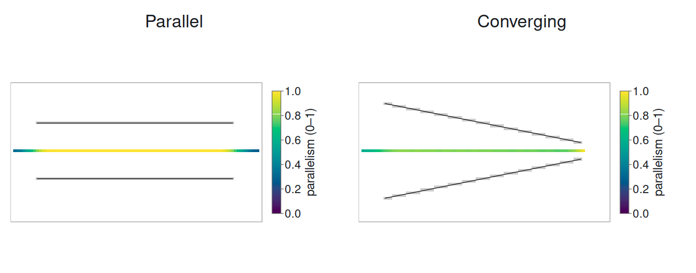
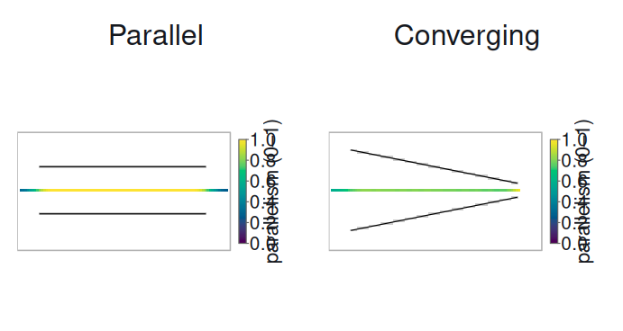
Parallelism along the axis of two parallel lines (left) and two lines converging at 11.3 degrees each (right). Constant width scores 1; steady narrowing lowers the whole branch.
par(op)The measured median for the converging pair, 0.802, is a little below the analytical 0.828. The difference comes from the raster: the radius is a distance between pixel centres, so along a sloped line it changes in uneven steps, and every uneven step lengthens the denominator. Replacing the raster radius by the exact distance to the lines recovers the analytical value:
exact <- b_con
exact$radius <- (34 - 2 * (14 / 70) * (exact$x - 10)) / 2 * cos(theta)
both <- (score_branch(exact, "parallelism") +
rev(score_branch(exact[nrow(exact):1, ], "parallelism"))) / 2
median(both[interior(exact)])
#> [1] 0.8280335Separation
Separation depends only on the radius R, in pixels: separation = (1 − 1/R)^10, smoothed as above. It increases with the gap between the contours and approaches 1 slowly: R = 3 gives 0.0173, R = 10 gives 0.349 and R = 50 gives 0.817. It is undefined (NA) below R = 1. Because R is measured in pixels, the same drawing rendered at a higher resolution scores higher.
narrow <- mlv_drawing(list(poly(c(10, 80), c(22, 22)),
poly(c(10, 80), c(28, 28))), 90, 50)
wide <- mlv_drawing(list(poly(c(10, 80), c(15, 15)),
poly(c(10, 80), c(35, 35))), 90, 50)
m_nar <- score_pair(narrow); m_wid <- score_pair(wide)
b_nar <- main_branch(m_nar); b_wid <- main_branch(m_wid)
rbind(radius = c(narrow = median(b_nar$radius[interior(b_nar)]),
wide = median(b_wid$radius[interior(b_wid)])),
separation = c(median(b_nar$separation[interior(b_nar)]),
median(b_wid$separation[interior(b_wid)])),
analytical = c((1 - 1/3)^10, (1 - 1/10)^10))
#> narrow wide
#> radius 3.00000000 10.0000000
#> separation 0.01734153 0.3486784
#> analytical 0.01734153 0.3486784
op <- par(mfrow = c(1, 2), mar = c(0.5, 0.5, 2, 0.5))
plot(m_nar, "separation", drawing = narrow, main = "Narrow gap")
plot(m_wid, "separation", drawing = wide, main = "Wide gap")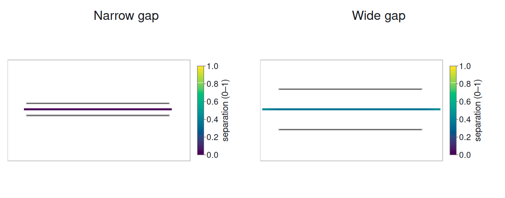
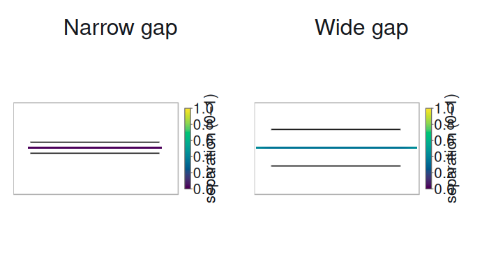
Separation for a 6 px gap (left, radius 3) and a 20 px gap (right, radius 10). The score grows with the radius; it is not a measure of closeness.
par(op)Mirror
When two contours are mirror images of each other, their line of
reflection is part of their medial axis, so that stretch of the axis is
straight. The mirror score measures how straight the axis is.
fit_line_segments() splits the branch greedily into
straight spans, extending each span while the mean perpendicular
distance of its interior points from the chord stays within 1 pixel. A
point in a span of n points scores 1 − 1/n before smoothing and the
power of 10.
The symmetric pair below consists of two bowed contours reflected about y = 25. The asymmetric pair keeps the upper contour and replaces the lower one with a straight line, so the axis bends to follow the upper contour.
xs <- seq(10, 80, by = 5)
upper <- poly(xs, 6 + 0.016 * (xs - 45)^2)
symmetric <- mlv_drawing(list(upper, poly(xs, 44 - 0.016 * (xs - 45)^2)), 90, 50)
asymmetric <- mlv_drawing(list(upper, poly(c(10, 80), c(38, 38))), 90, 50)
m_sym <- score_pair(symmetric); m_asy <- score_pair(asymmetric)
b_sym <- main_branch(m_sym); b_asy <- main_branch(m_asy)
spans <- function(b) fit_line_segments(cbind(b$x, b$y))$spans
rbind(spans = c(symmetric = nrow(spans(b_sym)), asymmetric = nrow(spans(b_asy))),
mirror = c(median(b_sym$mirror), median(b_asy$mirror)),
parallelism = c(median(b_sym$parallelism), median(b_asy$parallelism)))
#> symmetric asymmetric
#> spans 1.0000000 5.0000000
#> mirror 0.8521409 0.6336467
#> parallelism 0.2244749 0.5487837
chords <- function(b) { # drawn 4 px above the axis so the scores stay visible
s <- spans(b)
segments(b$x[s[, 1]], b$y[s[, 1]] - 4, b$x[s[, 2]], b$y[s[, 2]] - 4, lwd = 1.2)
points(b$x[unique(c(s))], b$y[unique(c(s))] - 4, pch = "|", cex = 0.6)
}
op <- par(mfrow = c(1, 2), mar = c(0.5, 0.5, 2, 0.5))
plot(m_sym, "mirror", drawing = symmetric, main = "Mirror-symmetric pair")
chords(b_sym)
plot(m_asy, "mirror", drawing = asymmetric, main = "Asymmetric pair")
chords(b_asy)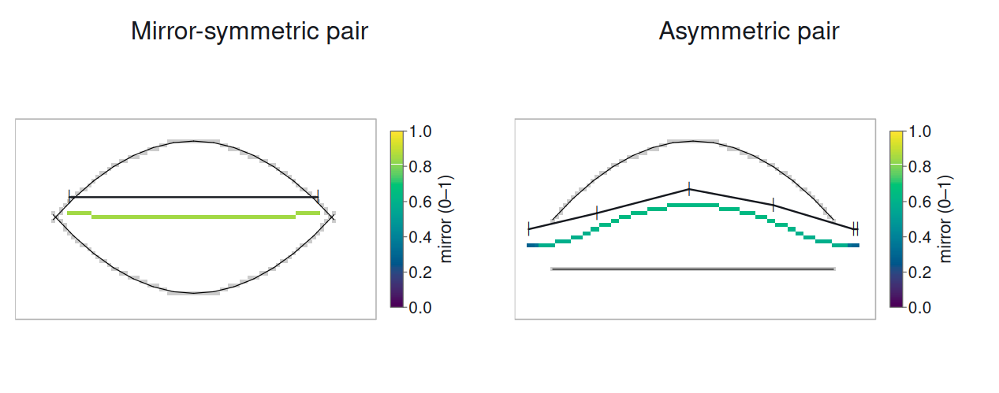
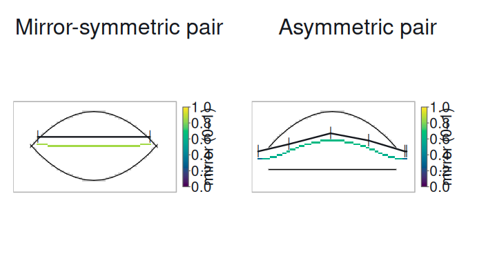
Mirror scores with the straight spans found by fit_line_segments() drawn as black chords, offset 4 px above the axis. The symmetric pair (left) has a straight axis fitted by one span; the asymmetric pair (right) needs several, and each shorter span scores lower.
par(op)The two scores dissociate. The symmetric pair has a straight axis (high mirror) but a radius that changes along it (low parallelism); the asymmetric pair has a bent axis but a more even gap. The mirror score also depends on branch length: a perfectly straight branch of n points scores (1 − 1/n)^10, which is 0.6 for 20 points and 0.88 for 80 points. Compare mirror scores between drawings whose branches have similar lengths, or summarize them over comparable structures.
Taper
Taper applies the parallelism formula to the change in the
rate at which the radius changes: the radius differences are
smoothed (moving mean of three), differenced again and smoothed again
before they replace ΔR. A constant width and a constant narrowing both
score 1, so taper distinguishes a wedge from a channel whose width
changes irregularly. Taper is not in the default properties
and must be requested.
wavy_x <- seq(10, 80, by = 2)
wave <- 4 * sin((wavy_x - 10) / 70 * 3 * pi)
wavy <- mlv_drawing(list(poly(wavy_x, 13 - wave), poly(wavy_x, 37 + wave)), 90, 50)
m_wav <- score_pair(wavy); b_wav <- main_branch(m_wav)
profiles <- list(parallel = b_par, wedge = b_con, wavy = b_wav)
round(sapply(profiles, function(b)
c(parallelism = median(b$parallelism[interior(b)]),
taper = median(b$taper[interior(b)]))), 3)
#> parallel wedge wavy
#> parallelism 1 0.802 0.503
#> taper 1 0.995 0.985
cols <- unname(okabe[c("blue", "orange", "green")])
op <- par(mfrow = c(2, 3), mar = c(3, 3.2, 2, 0.6), mgp = c(1.9, 0.5, 0),
cex.axis = 0.8, cex.lab = 0.85, cex.main = 1, font.main = 1)
for (k in seq_along(profiles)) {
m <- list(m_par, m_con, m_wav)[[k]]
d <- list(parallel, converging, wavy)[[k]]
par(mar = c(0.5, 0.5, 2, 0.5))
plot(m, "ink", drawing = d, legend = FALSE, main = names(profiles)[k])
b <- main_branch(m); points(b$x, b$y, pch = 15, cex = 0.25, col = cols[k])
}
par(mar = c(3, 3.2, 2, 0.6))
for (v in c("radius", "parallelism", "taper")) {
ylim <- if (v == "radius") c(0, 20) else c(0, 1)
plot(NA, xlim = c(0, 90), ylim = ylim, xlab = "x (px)",
ylab = if (v == "radius") "radius (px)" else paste(v, "(0–1)"),
main = v, las = 1, bty = "l")
for (k in seq_along(profiles))
lines(profiles[[k]]$x, profiles[[k]][[v]], col = cols[k], lwd = 1.6)
if (v == "radius") legend("bottomleft", names(profiles), col = cols, lwd = 1.6,
bty = "n", cex = 0.8)
}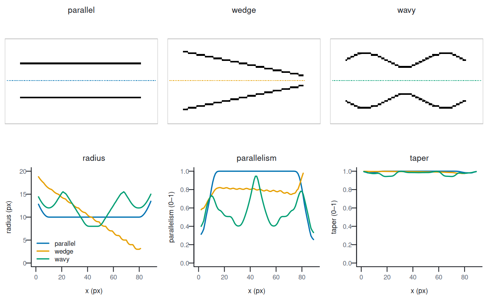
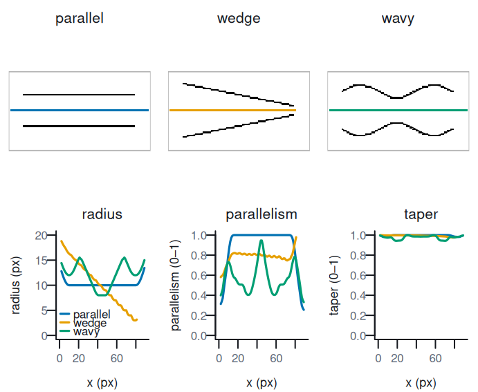
Top: three channels with their traced branch. Bottom: radius, parallelism and taper along each branch. The wedge loses parallelism but keeps taper near 1 because its width changes at a constant rate; the wavy channel lowers both, taper only slightly.
par(op)On these drawings taper stays close to 1 even for the wavy channel (median 0.985), because the second difference of a twice-smoothed radius is small for gradual changes. Parallelism falls at the branch ends, where the skeleton leaves the channel through its open ends and its radius changes rapidly. Taper stays near 1 there as well, because the radius grows at a nearly constant rate; it measures changes in that rate, not the rate itself.
Mapping scores onto contours
Contour features need one score per contour pixel, not per skeleton
pixel. For every pair of consecutive branch points,
map_mat_properties() constructs the points where a disc
rolling along the axis touches the boundary on either side: given the
two centres and their radii, these tangent points lie on the contours if
the radius was measured correctly. Each tangent point carries the mean
score of the two branch points it was built from, and each ink pixel
takes the score of its nearest tangent point, provided that point lies
within radius pixels (default 4). Exact distance ties and
pixels reached from several branches take the maximum score.
mapped <- map_mat_properties(drawing, mat)
names(mapped$mat_properties)
#> [1] "parallelism" "separation" "mirror" "taper"
round(sapply(mapped$mat_properties$parallelism, mean, na.rm = TRUE), 3)
#> [1] 0.941 0.942 0.791mapped$mat_properties holds one vector per property and
contour, with one value per contour pixel in raster order;
mapped$mat_images holds the same values as images, and
mapped$mat_mapping_masks marks which ink pixels received a
score. analyse_mat() runs compute_mat(),
compute_mat_properties() and
map_mat_properties() in one call.
plot(mapped, property = "parallelism", axes = FALSE,
main = "Parallelism mapped onto contours")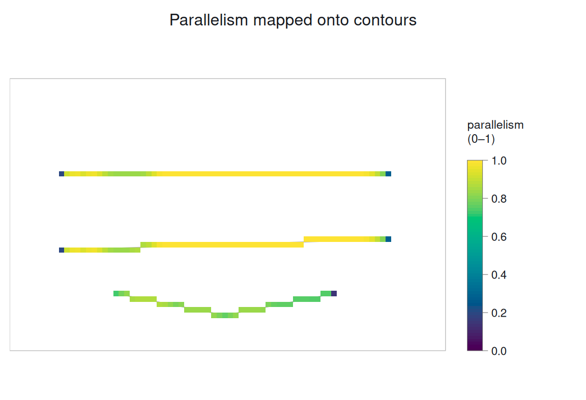
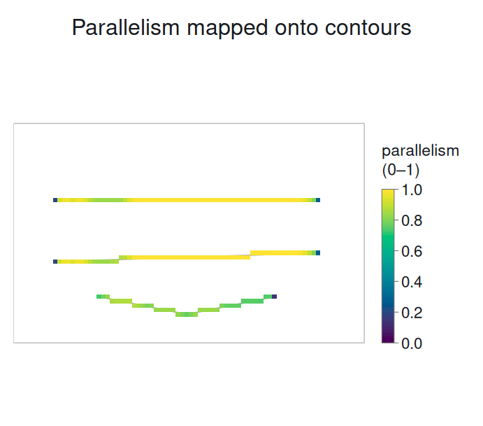
Parallelism mapped onto the contour pixels of the running example. The middle line takes the higher of the scores from the branches above and below it; at the default mapping radius every ink pixel receives a score.
The mapping radius trades coverage against specificity. A radius much smaller than one pixel misses pixels where the raster radius and the vector contour disagree by rounding; a large radius lets a branch claim pixels of a contour that does not bound it.
ink <- rasterize(drawing)
sapply(c(0.5, 1, 2, 4, 8), function(r) {
z <- map_mat_properties(drawing, mat, radius = r)$mat_images$parallelism
mean(is.finite(z[ink]))
})
#> [1] 0.8220859 0.9631902 1.0000000 1.0000000 1.0000000The values are the fraction of ink pixels mapped at radii of 0.5, 1, 2, 4 and 8 pixels.
Valid zeros and missing scores
A mapped score can be missing (NA) or a valid zero, and the two mean
different things. NA means that no branch gives the pixel a defined
score: either no branch’s tangent samples lie within
radius, or, for every branch that does, its samples nearest
to the pixel are undefined (a two-point branch has no parallelism).
Mapping does not reach past an undefined nearest sample to a farther
defined one. A single straight line has no partner contour, so its flux
never exceeds the threshold and every pixel is NA. A 20-pixel square is
fully covered: its skeleton is an X whose four tied arms are all shorter
than min_branch_points, and since removing them would
delete the skeleton, all four are kept.
A zero is a measurement. Two lines on rows 20 and 23 are three pixels apart, so their geometric medial radius is 1.5 pixels. The skeleton must lie on a pixel row, here row 21 or 22, one pixel from the nearer line, so the raster radius is exactly 1 and the separation is (1 − 1/1)^10 = 0 at every point. Zeros that only stand for an undefined value, such as the published scores of a branch’s end points, are NA under the default.
coverage <- function(d, ...) {
im <- analyse_mat(d, ...)$drawing$mat_images$separation
ink <- rasterize(d)
c(ink = sum(ink), missing = sum(is.na(im[ink])), zero = sum(im[ink] == 0, na.rm = TRUE))
}
single <- mlv_drawing(list(poly(c(10, 50), c(20, 20))), 60, 40)
square <- mlv_drawing(list(rbind(c(10, 10, 30, 10), c(30, 10, 30, 30),
c(30, 30, 10, 30), c(10, 30, 10, 10))), 40, 40)
close_pair <- mlv_drawing(list(poly(c(10, 50), c(20, 20)),
poly(c(10, 50), c(23, 23))), 60, 40)
rbind(single = coverage(single),
square = coverage(square),
close_pair = coverage(close_pair))
#> ink missing zero
#> single 41 41 0
#> square 80 0 0
#> close_pair 82 0 82Treat missing scores as missing: exclude them from means and
histograms rather than counting them as zero. The published MATLAB code
treats every zero as missing (MLV-M011 in the differences
register); branch_rule = "mlv2023" reproduces that, so
in that mode the close pair would have no separation values at all.
Parameters
| Argument | Default | Effect |
|---|---|---|
threshold_angle |
28° | Minimum object angle; larger values keep only points between nearly parallel boundaries. |
samples |
60 | Points on the flux circle; with aof = "centered" it
must be a multiple of 4. |
epsilon |
1 px | Radius of the flux circle. |
min_component |
2.5% of the larger image side | Smallest skeleton component kept, in pixels. |
min_branch_points |
10 | Shortest spur kept, in pixels; a component’s last path is never removed. |
window, power
|
5, 10 | Half-window (points) and exponent of the branch scores
(compute_mat_properties()). |
radius |
4 px | Maximum distance from a tangent point to a mapped ink pixel
(map_mat_properties()). |
The multiple-of-4 rule for samples follows from what the
default flux guarantees: rotating or reflecting the ink raster by any of
the eight symmetries of the pixel grid rotates or reflects the flux
field in the same way. That holds only if the sample directions
2πk/samples map onto themselves under a quarter turn and
under reflection in the diagonal.
compute_mat(drawing, samples = 30)
#> Error:
#> ! aof = 'centered' requires samples to be a multiple of 4 (lattice equivariance); got 30Where the medial axis lies
Two horizontal lines at y = 10 and y = 22 rasterize to ink rows 10
and 22. A pixel in row r between them is r − 10 pixels from the upper
line and 22 − r from the lower one, so the two distances are equal, and
the distance map has its ridge, at r = (10 + 22)/2 = 16. The medial axis
should therefore be the single row 16. The comparison below changes only
the flux definition, aof; the full published-compatible
recipe is given in
vignette("mlv-compatibility", package = "mlvtoolbox").
lines2 <- mlv_drawing(list(seg(5, 10, 45, 10), seg(5, 22, 45, 22)), 50, 32)
default_flux <- compute_mat(lines2)
mlv_flux <- compute_mat(lines2, aof = "mlv2023")
cut <- default_flux$parameters$threshold * default_flux$parameters$samples
above <- function(m) which(m$AOF[, 25] > cut) # rows above threshold in column 25
list(centered = above(default_flux), mlv2023 = above(mlv_flux))
#> $centered
#> [1] 16
#>
#> $mlv2023
#> [1] 16 17
list(centered = table(row(default_flux$skeleton)[default_flux$skeleton]),
mlv2023 = table(row(mlv_flux$skeleton)[mlv_flux$skeleton]))
#> $centered
#>
#> 16
#> 48
#>
#> $mlv2023
#>
#> 16 17
#> 45 2The default flux exceeds the threshold only on row 16, and its
neighbours on rows 15 and 17 have equal values. The MATLAB flux
(aof = "mlv2023") exceeds it on rows 16 and 17. MATLAB’s
computeAOF centres the sampling circle on the pixel corner,
half a pixel below and to the right of the pixel centre, but reads the
nearest-boundary labels from the cell containing each sample point, so
the ridge is displaced by half a pixel and spread over two rows
(MLV-M027). Thinning removes most of the second row, but 2 skeleton
pixels remain on row 17.
rows <- 11:21
op <- par(mar = c(3.2, 3.6, 1, 1), mgp = c(2.1, 0.6, 0), las = 1, cex.axis = 0.85,
cex.main = 1, font.main = 1)
plot(rows, default_flux$AOF[rows, 25], type = "o", pch = 16, col = okabe[["blue"]],
ylim = range(c(default_flux$AOF[rows, 25], mlv_flux$AOF[rows, 25], 0)),
xlab = "image row y (px)", ylab = "flux (sum of 60 samples)", bty = "l", xaxt = "n")
axis(1, at = rows)
lines(rows, mlv_flux$AOF[rows, 25], type = "o", pch = 17, col = okabe[["orange"]])
abline(h = cut, lty = 2, col = "grey40")
abline(v = 16, col = "grey70")
text(16, -12, "analytical\nmedial row 16", pos = 4, cex = 0.75, col = "grey30")
legend("topleft", c("aof = \"centered\" (default)", "aof = \"mlv2023\"",
"threshold"),
col = c(okabe[["blue"]], okabe[["orange"]], "grey40"), lty = c(1, 1, 2),
pch = c(16, 17, NA), bty = "n", cex = 0.75)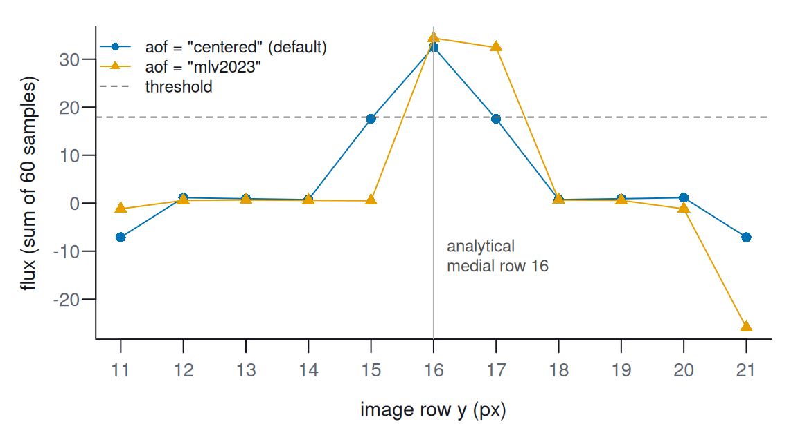
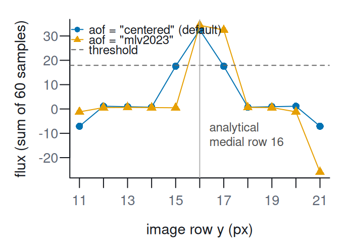
Flux across the gap between two lines (column 25). The default flux (blue) peaks on the analytical medial row 16 with symmetric neighbours; the MATLAB flux, aof = “mlv2023” (orange), exceeds the threshold (dashed) on rows 16 and 17.
par(op)Branch direction
A branch has no preferred direction, so its scores should not depend
on the end at which tracing started. Reversing every branch of the
converging pair and rescoring shows the difference between the two
branch rules; only branch_rule changes between the two
rows:
reverse_all <- function(m) {
m$branches <- lapply(m$branches, function(b) b[nrow(b):1, ])
m
}
change <- function(m) {
a <- compute_mat_properties(m, properties = P)$score_images
b <- compute_mat_properties(reverse_all(m), properties = P)$score_images
sapply(P, function(p) max(abs(a[[p]] - b[[p]]), na.rm = TRUE))
}
rbind(invariant = change(compute_mat(converging)),
mlv2023 = change(compute_mat(converging, branch_rule = "mlv2023")))
#> parallelism separation mirror taper
#> invariant 0.00000000 0.00000000 0.000000e+00 0.000000000
#> mlv2023 0.06347759 0.01604658 2.675637e-14 0.007097197The values are the largest change in any skeleton pixel’s score.
Under the default rule they are zero. The "mlv2023" rule
scores each point with forward differences, so reversal changes
parallelism, separation and taper (MLV-M028); mirror changes only by
rounding here because this axis is straight and is fitted by one span in
either direction.
Where to go next
-
vignette("mlv-compatibility", package = "mlvtoolbox"): reproducing published MLV values and choosing between the two modes. -
feature_spec()records every medial-axis setting so that a feature table can be rebuilt exactly;analyse_mat(drawing, spec = spec)applies it. -
score_branch()withestimator = "arclength"gives versions of the four scores defined by physical arc length, with windows and reference radii in pixels or degrees of visual angle.
References
Rezanejad, M., Downs, G., Wilder, J., Walther, D. B., Jepson, A., Dickinson, S., & Siddiqi, K. (2019). Scene categorization from contours: Medial axis based salience measures. Proceedings of the IEEE/CVF Conference on Computer Vision and Pattern Recognition.
Walther, D. B., Farzanfar, D., Han, S., & Rezanejad, M. (2023). The mid-level vision toolbox for computing structural properties of real-world images. Frontiers in Computer Science, 5, 1140723. https://doi.org/10.3389/fcomp.2023.1140723